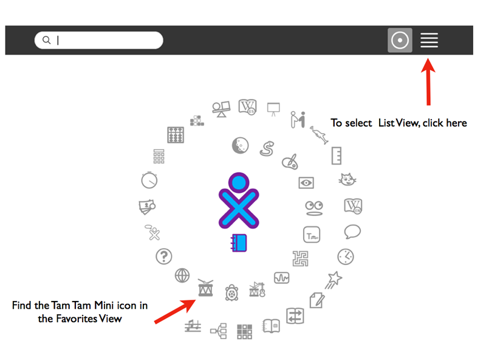
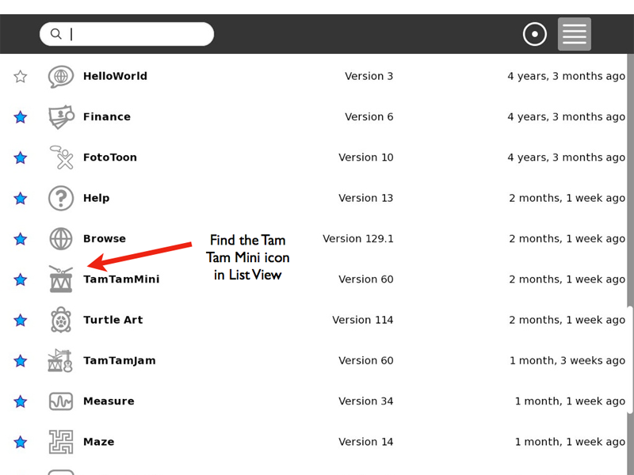
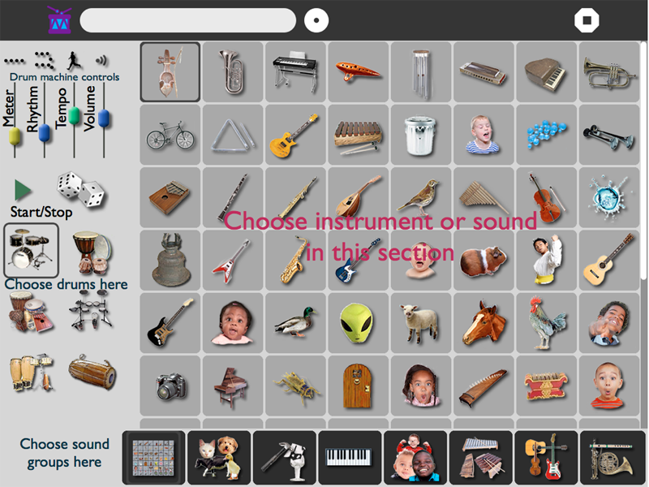

TamTam¶
About TamTamMini¶
Welcome to TamTamMini! This chapter of the Users manual is about TamTamMIni which is part of a suite of four musical Activities for use on the XO computer. Each of the four Activities is a bit different. In general they require increasingly higher levels of musical skill to use.
TamTamMini is the simplest of the four TamTam Activities but it offers a surprising variety of sophisticated features. It is simple enough to have fun with and suitable for ages 2 -92! Yet, it is complex enough to let you experiment. It can be used by a single XO laptop or more but does not utilize the mesh network.
You can begin by choosing an instrument or sound and experimenting with playing simple scales and songs using the XO’s QWERTY keyboard. This manual will help you learn to do that.
For more about TamTamMini, including how to use the Drum Machine and Loops, see the “Fun With TamTamMini” FLOSS manual.
TamTamJam is more complex than TamTamMini, but still suitable for school age children and adults. It has a different main screen but the same instruments and is designed for performance. You can record small melodic phrases and can combine several customizable loops. You can also share the beat with other XOs through the mesh network.
TamTamEdit is the basic TamTamActivity and must be installed in order to run any of the other Tam Tan Activities. It has much more sophisticated loops where you can choose instruments, pitches and the duration of notes on five different tracks. It offers almost 100 different musical sounds and a limitless variety of musical styles.
TamTamSynthLab is a highly sophisticated synthesizer program suitable for advanced work in both music and physics.
Starting TamTamMini¶
Select the TamTamMini icon (little drum with drumsticks)from the Favorites View. If you aren’t sure you have the right Activity, hover your cursor over the icon for a few seconds and, a little label that says “TamTamMini” will appear.
If you cannot find TamTamMini, change to the List View
When you find it in List View first check the little star next to the name of the Activity. If it is not filled in, click on the star so you can move it to the Favorites View. In either view, when you find the icon, click on it to open Tam Tam Mini.
Learning With TamTamMini¶
Choosing An Instrument¶
TamTamMini offers a wide variety of instruments and sounds. Before choosing the instrument you will use in these explorations, take time to try all of the sounds. If you hover your cursor over one of the pictures, the name of the instrument or sound will appear. Click on the picture and you will hear the sound. Clicking again repeats the sound.
After trying all of the sounds, choose the instrument you will use. Please choose a wind instrument or a bowed string instrument to get a sustained sound as you work. Later, after you understand how Tam Tam Mini works, you can play with all of the other sounds. Some instruments that work well for this include the trumpet, flute, violin, or cello. Other wind and bowed instruments will also work fine.
Introduction To The Keyboard¶
TamTamMini utilizes the regular keyboard to play the musical notes. This can be confusing to people who have studied music before as the traditional names of the notes will not match the letters, numbers and symbols on the keys. For this reason, we suggest you use a “movable Do” where a major scale becomes Do-Re-Mi-Fa-Sol-La-Ti-Do. Note: Some countries replace the “Ti” with “Si.”
Playing A Major Scale¶
In most western music a 7 note scale is used and then the names of the notes start over on the eighth note. We call this an octave. Interestingly the eighth note, which has the same name as the first one has exactly twice as many vibrations per second as the first note.
Use the instrument you have chosen to try playing a 2 octave major scale using these keys on the XO keyboard. We have included the Do-Re-Mi syllables for you as well.
(First Octave)
Do Re Mi Fa Sol La Ti Do
Z X C V B N M ,
(Second Octave)
Do Re Mi Fa Sol La Ti Do
Q W E R T Y U I
Note: “Do” is repeated in the second line. Leave one out if you like. You may also want to practice the scale a bit until you feel comfortable with it.

Playing A Simple Song¶
When you feel comfortable playing the 2 octave major scale, try this simple song. We think you may recognize it. The little line added to some of the Do-Re-Mi syllables indicates you hold that note twice as long as the other notes. (Example: Mi___)
Mi Re Do Re Mi Mi Mi___
C X Z X C C C___
Re Re Re_ Mi Sol Sol___
X X X___ C B B___
Mi Re Do Re Mi Mi Mi Mi
C X Z X C C C C
Re Re Mi Re Do___
X X C X Z___
Challenge: Play this same song using QWERT for the notes.
Challenge: If you have more than one XO player, try with the same instrument but one using the ZXCVB keys and the other using QWERT. Experiment with other combinations of instruments to see how they sound together.
Challenge: Chords are formed when 3 or more different notes are played at the same time. This happens when you strum on a guitar, ukulele, or similar instrument. Three or more wind or string instruments can combine to play chords together too. Here are 3 simple chords you can play using the notes you already know. In music these chords also have names based on the steps of the scale the main note is on, this is not always the lowest note. For example, a note with Do as the main note will be called a I (Roman numeral one) chord and a chord based on Sol will be called a V (Roman numeral five) chord.
Try these:
Sol B La N Ti M Sol T
Mi C Fa V Fa B Mi E
Do Z Do Z Re X Do Q
I IV V I
Playing Other Songs¶
Here is another song already figured out for you to try. It is an old European children’s folk song. It was so popular that two famous composers, Mozart and Haydn, both it to use in their music.
Twinkle, Twinkle, Little Star
Do Do Sol Sol La La Sol____
Z Z B B N N B_____
1 2 3 4 1 2 3____4
Fa Fa Mi Mi Re Re Do____
V V C C X X Z_____
1 2 3 4 1 2 3____4
Sol Sol Fa Fa Mi Mi Re____
B B V V C C X _____
1 2 3 4 1 2 3____4
Sol Sol Fa Fa Mi Mi Re____
B B V V C C X _____
1 2 3 4 1 2 3____4
Do Do Sol Sol La La Sol____
Z Z B B N N B_____
1 2 3 4 1 2 3____ 4
Fa Fa Mi Mi Re Re Do____
V V C C X X Z_____
1 2 3 4 1 2 3____ 4
Challenges¶
Try to figure out other simple songs on the XO. Write them down to help you remember the notes and to share them with other people.
If you have enjoyed working with TamTam Mini, you can find more information and ideas in the FLOSS manual, “Fun With TamTamMini” which will be available soon.
Note: This introduction to TamTamMini has focused on the Major Scale which is commonly used in music with a European heritage. To learn about the Pentatonic Scale, which is used in folk music of almost all cultures worldwide see the FLOSS Manual, “Fun With TamTamMini,” where it is included.